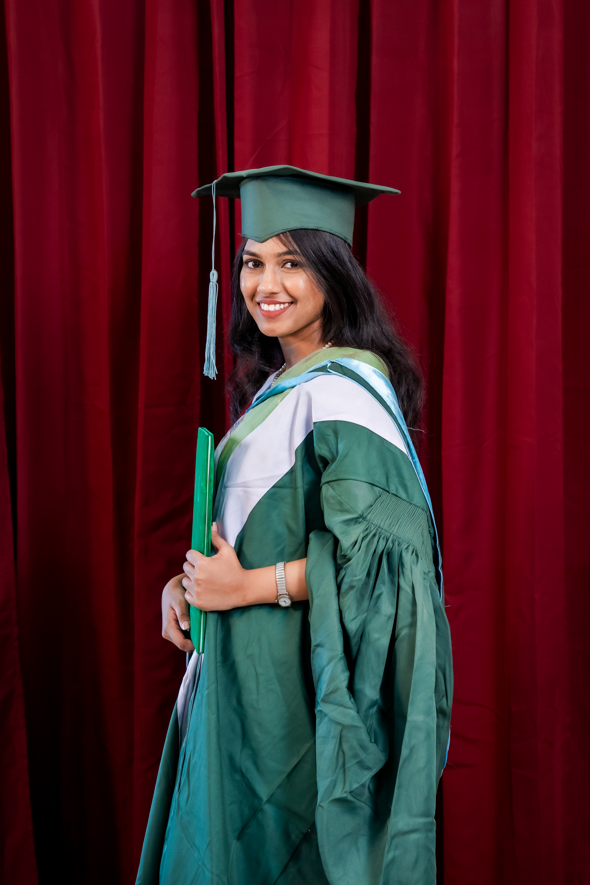
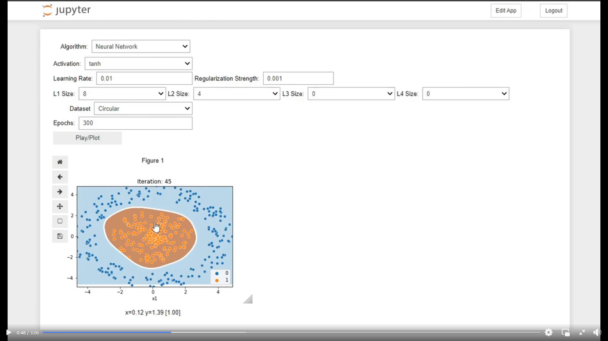
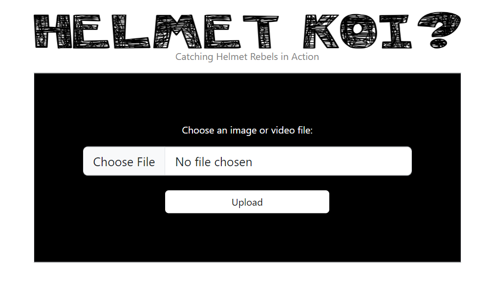
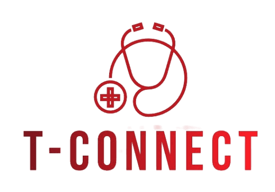
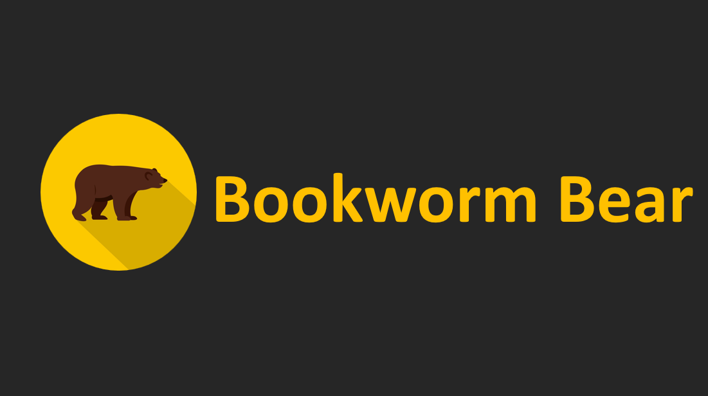

|
I am Sabah Nushra, a researcher working on trustworthy AI, computer vision, multimodal and vision-language models, and reliable model evaluation. I completed my B.Sc. in Computer Science and Engineering (CSE) from Islamic University of Technology (IUT). I am currently a Research Intern at ELITE Research Lab LLC, where I work on reproducible evaluation of modern AI systems under uncertainty, distribution shift, and real-world reliability constraints. My current research asks how AI systems fail, when their predictions should be trusted, and how evaluation protocols can reveal failure modes hidden by aggregate accuracy. My work spans structured reasoning in vision-language models, answerability and abstention in medical VQA, cross-dataset generalization and dataset-integrity auditing in brain MRI, reliability-aware Bangla cyberbullying moderation, and graph-based analysis of vision-model failures. My first-author paper BILAL-BENCH, which evaluates Islamic-source fabrication in Bengali open language models, was accepted to the Muslims in ML Workshop at NeurIPS 2026. I also have a first-author medical VQA paper under review at NAACL 2027, alongside several ongoing research manuscripts in trustworthy and multimodal AI. Beyond research, I have been actively involved in mentoring, technical communities, and competitive problem solving. Through the IUT Programming Community and the IEEE IUT Student Branch, I have mentored students and helped organize programming contests, workshops, and technical sessions. I have also participated in programming and AI competitions, with highlights including 1st Runner-Up at Huawei Women in Tech BD 2024 and Champion of IUTCS “The Great Web Off” 2024. Work email: sabahnushra [at] iut-dhaka [dot] edu |
 This photo was taken at my convocation on June 28, 2024 |
News and UpdatesOctober, 2026: September, 2026: 2026: January, 2026: July, 2024: March, 2024: February, 2024: December, 2023: August, 2023: July, 2023: May, 2023: April, 2023: February, 2023: December, 2022: August, 2022: December, 2021: August, 2021: April, 2021: February, 2021: |
Research ExperienceResearch InterestsI am primarily interested in building AI systems that can understand visual and multimodal information reliably and remain trustworthy when the data, domain, or deployment setting changes. This has led me to work on computer vision, multimodal and vision-language models, model evaluation, distribution shift and cross-dataset generalization, and uncertainty & calibration. I am also interested in test-time adaptation and low-resource & multilingual AI, particularly in settings where careful benchmarking, abstention, robustness, and systematic failure analysis are as important as raw predictive accuracy. |
Completed
Do Open Language Models Invent Scripture? BILAL-BENCH: Benchmarking Islamic-Source Fabrication in BengaliAccepted — Muslims in ML Workshop at NeurIPS 2026 | First Author workshop Introduced BILAL-BENCH, a 240-question expert-verified Bengali benchmark for studying Islamic-source fabrication across Qur'anic attribution, Hadith, Fiqh, contemporary issues, and adversarial false-premise prompts. Evaluated seven open-weight language models from 1B to 120B parameters on 1,680 double-annotated responses using a two-axis rubric that separates source correctness from response assertiveness. The study found persistently high confident fabrication across model scales and especially weak Hadith provenance, highlighting the need for citation verification and better abstention behavior in under-resourced religious QA settings. |
|
Knowing When Not to Answer: Image-Grounded Answerability and Abstention in Medical VQAUnder Review — NAACL 2027 | First Author Constructed a balanced medical VQA benchmark containing 45,942 answerable and unanswerable image-question pairs across X-ray, MRI, CT, Histology, and Gross Pathology. Developed an answerability-aware framework that converts questions into visual statements, measures image-text alignment with BioMedCLIP, and learns lightweight projections to determine whether the image provides sufficient evidence before answering. The study evaluates both answer correctness and appropriate abstention, with the broader goal of reducing unsupported responses in medical vision-language systems. |
|
Leakage-Controlled Structure-Preserving Augmentation and Template-Aware Evaluation for Bangla Symptom-Based Disease PredictionCompleted Study Developed a leakage-controlled evaluation pipeline for Bangla symptom-based disease prediction using 758 curated disease-symptom profiles spanning 85 diseases and 172 symptoms. The study applies train-only structure-preserving augmentation after group-aware splitting so that related disease templates remain within the same partition, reducing augmentation and template leakage. Multiple machine-learning models and voting ensembles are evaluated on curated validation/test data, while SHAP and LIME analyses are used to examine which symptoms drive model decisions and whether predictive behavior remains clinically interpretable. |
Ongoing
What Does Cross-Dataset Generalization Really Measure? A Dataset-Integrity Study in Brain Tumor MRISabah Nushra Manuscript in Preparation | Lead Researcher paper Conducting a systematic cross-dataset study of CNN, Transformer, and foundation-model architectures across public brain MRI datasets to examine whether strong external performance truly reflects domain generalization. The work combines zero-target-adaptation evaluation with multi-seed analysis, bootstrap uncertainty, dataset-provenance tracing, exact-duplicate auditing, perceptual near-duplicate screening, and within-split leakage checks. The central goal is to quantify how hidden source-target relatedness can inflate or otherwise confound conclusions drawn from nominally independent external benchmarks. Supervisor:Supervisor Name |
|
Understanding How Vision Models Fail: A Graph-Based Framework for Severity, Stability, and Model ComplementaritySabah Nushra Manuscript in Preparation | Lead Researcher paper Developing a graph-based evaluation framework that represents model mistakes as structured class-to-class failure transitions rather than isolated incorrect predictions. The framework introduces Failure Graph Risk (FGR), combining error frequency, prediction confidence, semantic distance, and sample difficulty to characterize the severity of a model's failures. Supporting analyses study how failure structure changes under perturbations and domain shift, and whether complementary failure graphs can help identify model pairs that are more effective for ensembling. Supervisor:Supervisor Name |
|
Beyond the Leaderboard: Reliability-Aware Operating-Point Evaluation for Bangla Cyberbullying ModerationSabah Nushra Manuscript in Preparation | Lead Researcher paper Evaluating Bangla-specific, multilingual, and compact generative models for five-class cyberbullying moderation under a strictly frozen train-development-test protocol. Rather than relying only on full-coverage accuracy, the study examines a realistic operating point in which the most uncertain comments are deferred for human review, alongside calibration, selective risk, rare-class Threat behavior, realistic Bangla perturbations, subgroup diagnostics, human error analysis, and standardized compute cost. The results show that the system with the best aggregate performance is not necessarily the strongest choice on every safety-critical operating measure. Supervisor:Supervisor Name |
Earlier / Other Research Projects

|
Enhancing Few-Shot Medical Image Segmentation with Refined PrototypesRole: Project Lead Proposed an iterative refinement framework that enhances support and query feature interaction for more accurate segmentation in few-shot medical imaging. Integrated self-attention and cross-masked attention modules to generate contextually enriched feature maps and robust prototype representations. Introduced regional prototype generation to handle intra-class variations and improve adaptability across diverse medical datasets (ABD-CT, ABD-MR, CMR). Achieved superior performance in mean Dice coefficient (DSC), demonstrating improved generalization and segmentation precision over existing methods. Supervisor:Dr. Hasanul Kabir |

|
Bengali Text Style Transfer using Fine-Tuned Transformer ModelsRole: Project Lead Constructed the first large-scale Bangla Style Transfer dataset containing 8,000 positive–negative and 4,000 formal–informal text pairs. Fine-tuned the Bangla T5 model for bilingual style adaptation, achieving substantial performance gains across both style transfer tasks. Model Achieved BLEU scores of 90.78 (formal→informal) and 88.13 (positive→negative), significantly outperforming baseline models. Supervisor:Sabbir Ahmed |
Projects |

|
Seeing Isn't StructuringTools: Python, PyTorch, Hugging Face, Jupyter/Kaggle, 2026 code / Report Developed a controlled 170-query multimodal benchmark across seven failure modes, with synthetic Snakes & Ladders generation, prerequisite calibration, automated scoring, and cross-model evaluation of seven open-weight VLMs to identify systematic failures in structured visual reasoning beyond basic perception. |

|
Darkroom: Old Photo Restoration and ColorizationTools: Python, PyTorch, OpenCV, Gradio, Hugging Face, 2026 code/ Built an end-to-end restoration and colorization pipeline combining denoising, scratch removal, contrast enhancement, and transfer-learned deep colorization. Restoring before colorization improved PSNR from 15.28 to 16.84 and SSIM from 0.282 to 0.487 on synthetically degraded test images. |
|
 |
ML Algorithm VisualizerTools: Jupyter, ScikitLearn, 2023 code/ Developed educational software that visualizes the working processes of core machine-learning algorithms to make fundamental concepts easier to understand through visual learning. The tool covers Linear and Logistic Regression, Neural Networks, linear and non-linear SVMs, K-means, Naive Bayes, Decision Trees, and PCA. |
|
 |
Helmet Detection using YOLOTools: Python, OpenCV, 2023 code/ Developed a web application that detects whether a motorcycle rider is wearing a helmet. Evaluated YOLOv5, YOLOv6, and YOLOv8 on the project dataset to compare their performance for automated helmet-compliance monitoring. |

|
Neural Style TransferTools: Tensorflow, 2023 code/ Implemented Neural Style Transfer (NST) using TensorFlow and a pretrained VGG-19 model to blend content and style images, producing artistic outputs after iterative feature optimization over 2000 iterations. |

|
IUTCSTools: Django, HTML, EJS, MySQL, 2023 code/ Built a club website featuring a blog, event pages, and registration functionalities for intra- and inter-university events. Implemented the frontend with HTML and CSS and managed data storage using MySQL. |

|
AasthaTools: React, Node.js, HTML, MySQL, 2022 code/ Developed a web application that connects people in medical emergencies with nearby blood donors, featuring a searchable database built with MySQL and a user-friendly frontend using HTML, CSS, and EJS. |
DormEaseTools: Dart, Firebase, 2022 code/ A comprehensive hostel management mobile app that allows students to book rooms, submit complaints, view notices, update personal information, check vacant rooms, and see the food menu. |
|
|
 |
TConnectTools: React, Node.js, MongoDB, 2021 code/ A prescription management website. Enabled doctors to view patients’ medical documents upon receiving permission from the patients. |
|
 |
BookwormBearTools: C++, SFM, 2020 code/ An interactive Word game with Visual Effects and Music. Implemented using C++ with the help of SFML Library. There is a maze in the game. And some letters have been given. Players have to guess the word correctly. If the player can’t guess the word in that case he can take a hint. |
Education
|
Work Experience
|
Honors and Awards
- Champion, IUTCS presents ”The Great Web Off”, 2024 - 29th, HerWILL: AI for Equality Datathon, 2024 - 4th, Blockchain Olympiad Bangladesh, 2023 - 32nd, DL Sprint 2.0- BUET CSE Fest, 2023 - 30th, ASR for Regional Dialects Datathon, Bengali.AI, 2023 - Top60, ICPC Algo Queen (Global Rank), 2023 - 9th, CodeRush 1.0 Intra-IUT Programming Contest, 2023 - 26th, National Girls’ Programming Contest, 2023 - 6th, IUT Intra-University Programming Contest, 2022 - 17th, Ada Lovelace National Girls’ Programming Contest, 2022 - 18th, Ada Lovelace National Girls’ Programming Contest, 2021 - 32nd, National Girls’ Programming Contest, 2021 - Top 50, Banglalink Ennovators 3.0, 2021 - Top 10, GP Explorers 2.0, 2021 |
Leadership
|
|
Last updated: October 7, 2026 |